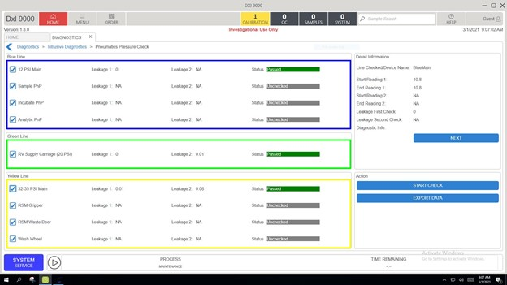
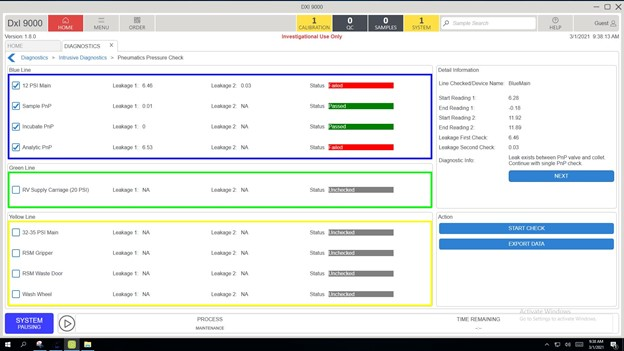

Testing Pneumatics Lines for Leaks
This topic includes information about how to test the pneumatics lines for leaks.
- Select SYSTEM RUNNING and go to to enter the instrument into a YELLOW (Paused) status.
- In the Console App go to and select Start Session.
- Select Pneumatics Pressure Check to open the Pneumatics Pressure Check page.
- Select all items in the Blue Line, Green Line, and Yellow Line areas.
Note: The pneumatic tubing is color coded to match which pneumatic line in the UI it is associated with.
- Select
Start Check.
Note: The Pneumatics Pressure Check will test the Main Line first. If the Main Line passes, the diagnostics will end because the system assumes the rest of the line is fine, and therefore the other branches will be unchecked.Note: If the instrument passes the leak test it should resemble the screen below:

- Select Export Data. If the Export Data button isn’t available, click anywhere on the screen to make it available.
Note: If the instrument fails, the test will continue systematically to isolate the location of the leak. The leak test should resemble the screen below:
- The Detail Information area will display information you can use to troubleshoot the lines that failed. Select Next to view additional data.
- Repeat for each line that failed until all leaks are located.
- Select Export Data.
Note: For example, in the illustration above, the Analytic PnP failed, so all the lines were tested. The Details pane shows the leak was isolated to the PnP valve in the Analytic PnP.Note: For Blue Line failure only, you can run one component at a time for troubleshooting purposes.